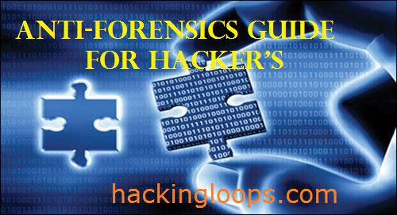

Removing or Hiding traces is most important thing that every hacker should know otherwise you will be busted in less than 5 minutes. In our previous article we have learned about how to remove traces over Network. Today we will learn how to make your computer almost untraceable, so that you cannot be tracked or monitored by anyone. This will not only help you in hiding your identity during hacking attempts but also make you anonymous over the network. Hiding or removing traces sometimes also referred as Anti-forensics.